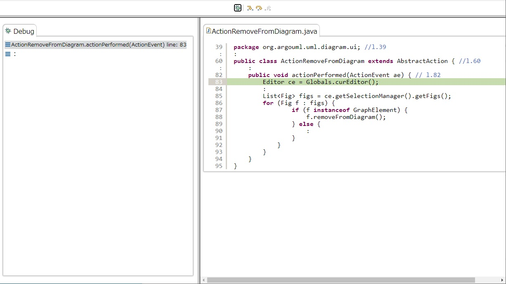
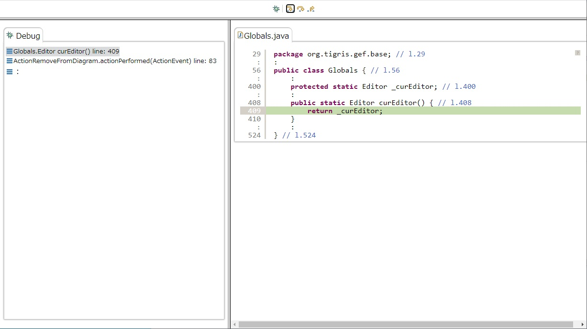

With respect to the real-world programs, we extract only the source code related to each subject.
The extracted source code of a real-world program is presented on the website in a Eclipse’s debugger-like view.
The debugger-like view allows the participants to control the program execution flow stepping through the source code.
First, press the debug button to start debugging.
The debugger-like view is displayed on the left, and the running line is highlighted in light green.
If you press the second step into button from the left here, you will move to the called destination, and the called destination method will also be stacked on the stack on the debugger-like view.
The description of each button is as follows: